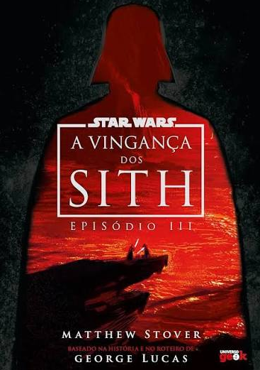
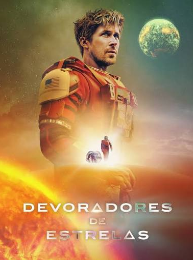
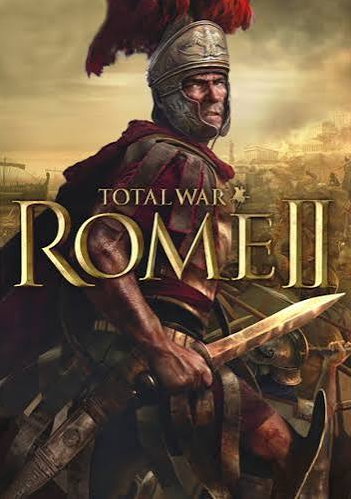
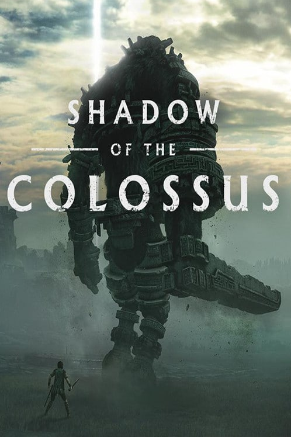
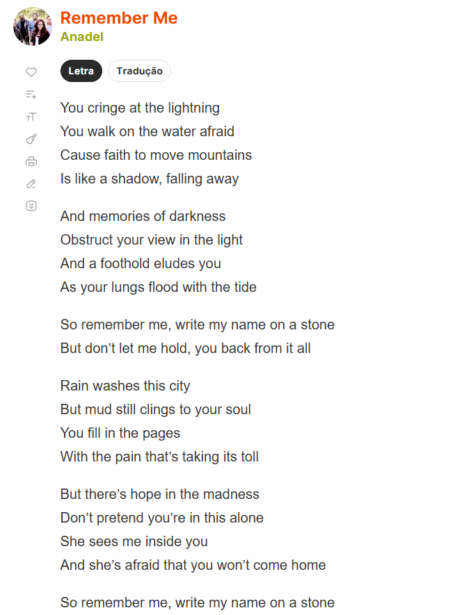
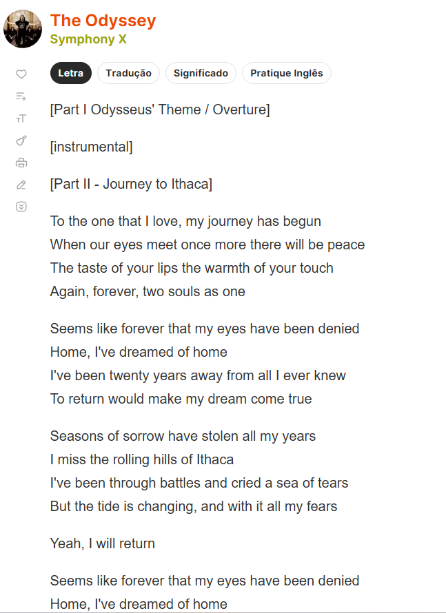

Mostra a queda da República Galáctica e a transformação de Anakin Skywalker em Darth Vader.

Um professor de ciências do ensino fundamental que acorda sozinho a bordo de uma espaçonave, a 11,9 anos-luz da Terra, sem memória de quem é ou de como foi parar ali.

Um jogo de estratégia em tempo real e por turnos que retrata a ascensão, a crise e a transformação da República Romana em um vasto império durante o período da Antiguidade Clássica.

Wander, um jovem que viaja ilegalmente para uma "Terra Proibida" levando o corpo de sua amada, Mono, que faleceu devido a uma maldição na intenção de ressucita-la.

A letra faz referência à passagem bíblica em que o apóstolo Pedro tenta andar sobre as águas em direção a Jesus, mas começa a afundar quando é dominado pelo medo e pela dúvida.

A música é uma adaptação musical direta do poema épico A Odisseia, de Homero, narrando o longo e perigoso retorno de Odisseu (Ulisses) a Ítaca após o fim da Guerra de Troia.
